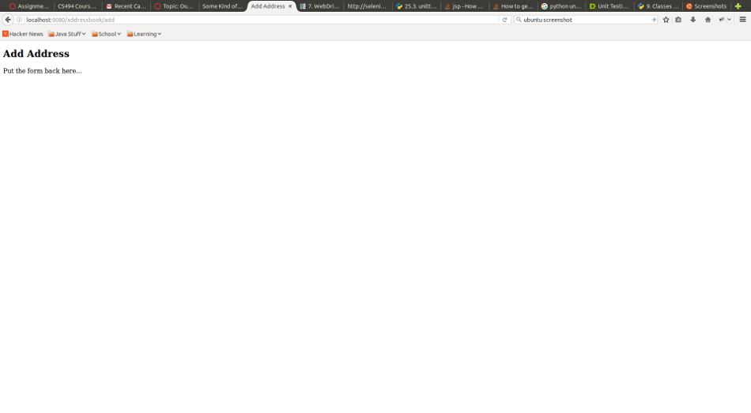

Python/Selenium/Test Driven Development
This walkthrough is going to cover using Selenium in a test drivent development paradigm to develop a simple CRUD web application. Briefly Test Driven Development is the practise of writing simple tests first and then writing the code to fulfill those tests. This is generally a well understood paradigm for low level library code. Frameworks like JUnit for Java and unittest for Python make TDD for low level library reasonably straight forward and it's the rare programmer that doesn't appreciate the value of good unit tests. Integration testing is generally the same as unit testing but instead of mocking out dependencies the code is actually making external calls to dependant systems. One example of unit vs integration testing would be tests for your code that saves data to a database. A unit test will not access the database - any calls that would go to the database are typically mocked out with implemenations. An integration test typically will have real calls out to the database and the database state will be verified as part of the test assertions.
In the case of web applications a significant chunk of the application will be baked into UI of the application - ie what pages are in the application, the HTML, CSS and Javascript on those pages, and how those pages cause the browser to interact with the application server - ie what ajax calls, form submissions and static or dynamic resources are loaded on each page. With Selenium it is possible to write tests for this interface and we can apply the TDD paradigm to grow our tests with our application. This tutorial will walk through this process for a simple CRUD application. While the application we will be testing is fairly simple in it's scope and data the techniques described will for the most part translate to large and more complex applications. I will include a section on some of the challenges of applying this approach to larger applications and consider some ways of mitigating those problems.
Our CRUD Application in Brief
The application we will be writing tests for will be a simple address book. The addressbook will have entities consisting of Contacts and Addresses. Each contact may be associated with zero to many addresses. A Contact has the properties first name, last name and birthday. An address will consist of a street address, street name, city, state and zipcode.
The CRUD application will be developed in parallel with the test suite which is in keeping with TDD. First a test will be writen to verify some piece of functionality and initially this test will fail. Then the functionality will be added to the application to make the test pass and if necessary the test code will be adjusted to meet the actual implementation of the code under test.
Since the primary focus of this tutorial is how to apply TDD to the writing of selenium tests I will not be focusing on the actual implementation of the CRUD application. Only enough detail to describe the tests requirements and whatever additional info is useful to someone following allong will be included. The web is lousy with tutorials to create an address book. This tutorial will focus on creating the tests.
TBD include some links to CRUD tutorials.
The application will use HTML5, Twitter Bootstrap and jQuery for it's front end components and knowledge of those tools will be necessary to implement the tests correctly.
Bootstrapping the Test Code
A selenium test suite is basically an application unto itself. Granted it's goals are to test some other application but so much design and coding goes into good selenium test suite that it really is it's own application. I've found the best way to write reliable python application is using virtualenv to setup a stable environment for the application code. Virtualenv allows you to isolate the application code from the system that it's running on by.
So the first step of setting up our test suite is bootstrapping an empty envirnment virtual env. Here is a good reference of setting up a Flask application with virtual env http://www.enigmeta.com/2012/08/16/starting-flask/ Everything up to "Install Flask" is relevant to general virtualenv development.
First in a terminal cd to whichever directory you want to create your project in. There will be a new sub-directory containing the actual project. We will call our project PythonSeleniumHowTo and I want to keep the code in /home/myusername/myworkspace so I would run...
$ cd /home/yourusername/yourworkspace
$ virtualenv PythonSeleniumHowTo
At this point you have an empty project that should look like this
$ cd PythonSeleniumHowTo $ ls bin include lib local pip-selfcheck.json
Most of the contents of the project at this point aren't relevant to us. The most important one is the bin/activate script. Whenever you are working on the project from now on the first thing you should do is execute the following...
$ cd PythonSeleniumHowTo $ source bin/activate (PythonSeleniumHowTo) $
Your prompt will have changed to show the project name as a prefix to your
exiting prompt. This lets you know that you are running in a virutal env and
any changes you make to the python system will only apply within the context
of the virtualenv. So any new packages you add via pip will be visible in
the virtual env and no the running system. Likewise any changes in the parent
system won't effect the virtual env. To exit the virtualenv you just enter the
deactivate command.
At this point we're ready to write a failing test.
The First Test Case (kind of)
First create a directory named tests. This is where all the test code will
live. In this directory create a file test_address_index.py and using your
favorite editor enter the following code...
import unittest class AddressesIndexTestCase(unittest.TestCase): def test_index_loads(self): self.assertTrue(False) if __name__ == "__main__": unittest.main()
If you are sharp of eye you'll notice that we are assertTrue(False) so this test couldn't possibly pass. This is fine because right now we're just trying to verify that we can run tests and that we have all the required modules available. Now try running the following.
(PythonSeleniumHowTo) $ python test/test_address_index.py
F
======================================================================
FAIL: test_index_loads (__main__.AddressesIndexTestCase)
----------------------------------------------------------------------
Traceback (most recent call last):
File "test/test_address_index.py", line 5, in test_index_loads
self.assertTrue(False)
AssertionError: False is not true
----------------------------------------------------------------------
Ran 1 test in 0.000s
FAILED (failures=1)
While the test fails we can see that it does actually run. Now at the top of the test/test_address_index.py file add the following import...
import selenium
Save the file and rerun the test command...
(PythonSeleniumHowTo) $ python test/test_address_index.py Traceback (most recent call last): File "test/test_address_index.py", line 1, in <module> import selenium ImportError: No module named selenium
Now this isn't a test failure but rather an execution error. To fix it we need to install the selenium module. From the cli run...
(PythonSeleniumHowTo) $ pip install selenium
Collecting selenium
Downloading selenium-2.53.2-py2.py3-none-any.whl (884kB)
100% |████████████████████████████████| 890kB 609kB/s
Installing collected packages: selenium
Successfully installed selenium-2.53.2
As long as it installs successfully and it's selenium 2.x things should be okay. Lets try running the test again...
(PythonSeleniumHowTo) $ python test/test_address_index.py
F
======================================================================
FAIL: test_index_loads (__main__.AddressesIndexTestCase)
----------------------------------------------------------------------
Traceback (most recent call last):
File "test/test_address_index.py", line 5, in test_index_loads
self.assertTrue(False)
AssertionError: False is not true
----------------------------------------------------------------------
Ran 1 test in 0.000s
FAILED (failures=1)
Yay, this is the same failure as above so we've successfully installed the selenium module. Whenever I add a new module I like to make sure I update the requirements text file with the following command...
(PythonSeleniumHowTo) $ pip freeze > requirements.txt
Make sure you include the requirements.txt file in your version control because it's what virtualenv and pip can use to recreate the execution environment. This WILL save you a headache later. Otherwise at some point some random module will change and your test code will break for no good reason. Not fun.
Okay so now we've got a bogus test and a way to run it - let's see if we can make it less bogus.
Some Kind of a Test
Probaby the simpleist piece of functionality in any CRUD application is the "R" - retrieve. This is analogous to a SELECT in SQL. Since that is the easiest to implement and I want to make sure I have something to demo at the end of the sprint that's what I'll do first. Before that though I'll write a test. The test explicitly defines what should happen. In this case I will arbitrarily say that this test will load up the root url of the application under test, extract the list addresses from the page and verify the contents of that list of addresses. Breaking it down further what is the simplist thing I could possibly test for? Probaby the presence of the addresses ie that there is a list of addresses on the page. Since this is very early in development I'm free to define the HTML structure so I'll write the test to look for div.addresses > div, and verify that list isn't empty. Let's update the test/test_address_index.py to the following...
import selenium.webdriver import unittest class AddressesIndexTestCase(unittest.TestCase): def setUp(self): self.driver = selenium.webdriver.Firefox() def tearDown(self): self.driver.close() def test_index_loads(self): self.driver.get("http://localhost:8080/addressbook") self.assertTrue("http://localhost:8080/addressbook", self.driver.current_url) addressDivs = self.driver.find_elements_by_css_selector("div.addresses > div") self.assertIsNotNone(addressDivs) self.assertTrue(0 < len(addressDivs)) if __name__ == "__main__": unittest.main()
Now when we run the test we see the following...
(PythonSeleniumHowTo) $ python test/test_address_index.py . ---------------------------------------------------------------------- Ran 1 test in 2.316s OK (PythonSeleniumHowTo) $
Video Demo of Progress
Below is a video demonstration of the test in action as things stand now.
Moving On
We're in a pretty good place now to start writing the test for the next incremental feature. Since we can see the list addresses probably the next easiest feature is a link to a form to add a new address. I'll go ahead and define this feature simply as a link to /add relative to the application root. The test for this will just check for the link, click the link and check that the new edit page loads. Notice this will not check anything on the edit page itself - simply that the page loads. This will keep the test short and sweet. Keeping the tests short is an advantage in a few ways. First: when a test breaks it will be relatively easy to diagnose. The longer a test is the harder it is to diagnose the problem and the more brittle it is. The second reason to keep the tests short is speed. By speed I mean both processor time and programmer time. A lot of short tests can be parallelized to run the total suite more easily than one long serialized test and a set of small tests is generally going to make your development loop for the programmer much faster. That said lets get on with it.
Go ahead and add a new test method to add our new test to. Let's call it test_index_add_link. We'll add it to the class like so...
class AddressesIndexTestCase(unittest.TestCase): def setUp(self): self.driver = selenium.webdriver.Firefox() self.driver.get("http://localhost:8080/addressbook") self.assertEqual("http://localhost:8080/addressbook", self.driver.current_url) self.assertEqual("Addresses", self.driver.title) def tearDown(self): self.driver.close() def test_index_loads(self): addressDivs = self.driver.find_elements_by_css_selector("div.addresses > div") self.assertIsNotNone(addressDivs) self.assertTrue(0 < len(addressDivs)) def test_index_add_link(self): self.driver.find_element_by_id("add-address").click() self.assertTrue("http://localhost:8080/addressbook/add", self.driver.current_url) self.assertEqual("Add Address", self.driver.title)
Astute readers will notice a couple of differences with our previous code besides the new test method. Now the setUp method actually opens the index page and checks if it's open. Also we're now checking the page title as well as the current url to verify the page is open. This is a quirk of the selenium implementation where it reports the URL that the browser currently show. However depending on the platform running your web application the actual page loaded may not be the one you want. If for example there was some server side error the browser would show the correct URL but the page would actually have a 500 error message in it. This makes it necessary to check some content of the loaded page to verify we aren't seeing an error page. In our case I'll check the page title as that should only appear if we are on the correct page.
If we run this now we'll see the following...
(PythonSeleniumHowTo) $ python test/test_address_index.py
E.
======================================================================
ERROR: test_index_add_link (__main__.AddressesIndexTestCase)
----------------------------------------------------------------------
Traceback (most recent call last):
File "test/test_address_index.py", line 24, in test_index_add_link
add_address = self.driver.find_element_by_id("add-address").click()
File "/home/zac/Documents/OSU/496/PythonSeleniumHowTo/local/lib/python2.7/site-packages/selenium/webdriver/remote/webdriver.py", line 266, in find_element_by_id
return self.find_element(by=By.ID, value=id_)
File "/home/zac/Documents/OSU/496/PythonSeleniumHowTo/local/lib/python2.7/site-packages/selenium/webdriver/remote/webdriver.py", line 744, in find_element
{'using': by, 'value': value})['value']
File "/home/zac/Documents/OSU/496/PythonSeleniumHowTo/local/lib/python2.7/site-packages/selenium/webdriver/remote/webdriver.py", line 233, in execute
self.error_handler.check_response(response)
File "/home/zac/Documents/OSU/496/PythonSeleniumHowTo/local/lib/python2.7/site-packages/selenium/webdriver/remote/errorhandler.py", line 194, in check_response
raise exception_class(message, screen, stacktrace)
NoSuchElementException: Message: Unable to locate element: {"method":"id","selector":"add-address"}
Stacktrace:
at FirefoxDriver.prototype.findElementInternal_ (file:///tmp/tmpLBK1Tj/extensions/fxdriver@googlecode.com/components/driver-component.js:10770)
at FirefoxDriver.prototype.findElement (file:///tmp/tmpLBK1Tj/extensions/fxdriver@googlecode.com/components/driver-component.js:10779)
at DelayedCommand.prototype.executeInternal_/h (file:///tmp/tmpLBK1Tj/extensions/fxdriver@googlecode.com/components/command-processor.js:12661)
at DelayedCommand.prototype.executeInternal_ (file:///tmp/tmpLBK1Tj/extensions/fxdriver@googlecode.com/components/command-processor.js:12666)
at DelayedCommand.prototype.execute/< (file:///tmp/tmpLBK1Tj/extensions/fxdriver@googlecode.com/components/command-processor.js:12608)
----------------------------------------------------------------------
Ran 2 tests in 4.553s
FAILED (errors=1)
Once again this is progress disguised as a failure. Now we can go add this functionality to our application. I'll go ahead and go do that now... and I'm back. Now when I run the test we see the following test output...
(PythonSeleniumHowTo) $ python test/test_address_index.py .. ---------------------------------------------------------------------- Ran 2 tests in 4.619s OK (PythonSeleniumHowTo) $
Note that this test doesn't check the functionality of the /add page. In fact that page looks like this...

... that's it. The minimal implementation to satisfy the test. Now we need to start the tests for this add page to test it's functionality. However we'll do this in a new test that we'll call test_address_add.py In this new file add the following code...
import selenium.webdriver import unittest class AddressesAddTestCase(unittest.TestCase): def setUp(self): self.driver = selenium.webdriver.Firefox() self.driver.get("http://localhost:8080/addressbook/add") self.assertEqual("http://localhost:8080/addressbook/add", self.driver.current_url) self.assertEqual("Add Addresses", self.driver.title) def tearDown(self): self.driver.close() def test_address_add(self): pass if __name__ == "__main__": unittest.main()
We can even run this test and it will pass because the URLs already exist. Before we get to the real test code though it's worth setting up a mechanism to run all of our tests at once. It's generally a good idea to be able to easily run both a single test and the full test suite. We can easily do the first already but we lack a way to run all the tests. This can be achieved with a test suite. First add the following function definition to the test_address_index.py file...
def suite(): suite = unittest.TestLoader().loadTestsFromTestCase(AddressesIndexTestCase) return suite
Now create a new file test/test_all.py and add the following code...
import unittest import test_address_index allTests = unittest.TestSuite() allTests.addTest(test_address_index.suite()) unittest.TextTestRunner().run(allTests)
If you run this you should see the following...
(PythonSeleniumHowTo) $ python test/test_all.py .. ---------------------------------------------------------------------- Ran 2 tests in 4.582s OK (PythonSeleniumHowTo) $
Add a similar suite function to the test_address_add.py file and then add it to the full suite the same way we added the test_addres_index case. Now executing the test/test_all.py code should run all of the tests. Whenever we add a new test case we simply add it to the test_all.py file and we have a convenient way to run the full suite. Now let's get back to the add address test.
The requirements for the add address page are as follows... It must have a form that takes the properties of an address A submit button to submit the form * On successfull submission the form should redirect back to the address index
So the first thing we need is a form we can fill out. Before we create that form we should create a test that fails without it. The most basic thing I can do with a form is enter some text into a text field so let's go ahead and do that by adding...
self.driver.find_element_by_id("address-street").send_keys("285 Edgewater Ln")
... to the test_address_add method. Now this should fail spectacularly because that element doesn't exist on the page. Now let's submit the form - oh wait - test first. Add the following to the test code
self.driver.find_element_by_id("address-submit").click()
Once again a spectacular failure. Go ahead and add the button to the form. At this point we expect to be back on the index page of addresses so let's add a check for that...
self.assertTrue("http://localhost:8080/addressbook", self.driver.current_url)
Presumably this doesn't work so go ahead and go implement that form redirect. I hope you are starting to see a pattern at this point. Now we can fill out, submit the form, and verify the redirect. One extra chunk of functionality we should test is that the new address we submitted appears in the list of addresses on the index. Lets add some logic to our add address test to check the list of addresses on the index for the address we just created. At this point the test_address_add method should look like this...
def test_address_add(self):
self.driver.find_element_by_id("address-street").send_keys("285 Edgewater Ln")
self.driver.find_element_by_id("address-submit").click()
self.assertEqual("http://localhost:8080/addressbook", self.driver.current_url)
addressDivs = self.driver.find_elements_by_css_selector("div.addresses > div")
self.assertIsNotNone(addressDivs)
foundAddress = False
for addressDiv in addressDivs:
if ("285 Edgewater Ln" == addressDiv.text):
foundAddress = True
self.assertTrue(foundAddress)
So this passes but there is something worth noting. See the hard coded address "285 Edgewater Ln"? Assume during the first run of this test the test passes and that address is persisted to whatever datastore backs the development version of your application. Now at some later point suppose your persistence logic breaks. The test wont necessarily catch that because when it looks at the list of addresses it will the entry from a previous run. My preferred way of handling this problem is to introduce some random data into the test. Instead of a simple hard coded value let's append a random value onto it. To avoid collisions within the random values we'll also use the date time. Now the method looks as follows...
def test_address_add(self):
streetAddress = "285 Edgewater Ln"
streetAddress = streetAddress + "_" + str(random.randint(1, 99999))
streetAddress = streetAddress + "_" + str(time.time())
self.driver.find_element_by_id("address-street").send_keys(streetAddress)
self.driver.find_element_by_id("address-submit").click()
self.assertEqual("http://localhost:8080/addressbook", self.driver.current_url)
addressDivs = self.driver.find_elements_by_css_selector("div.addresses > div")
self.assertIsNotNone(addressDivs)
foundAddress = False
for addressDiv in addressDivs:
if (streetAddress == addressDiv.text):
foundAddress = True
self.assertTrue(foundAddress)